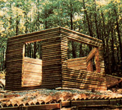
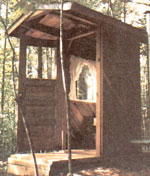

A Landscape-Log Cabin
These readers demonstrated their determination to do more with less with these construction designs, including diagram of floor plan, six easy pieces, future dreaming.
By Bill Laughlin
July/August 1985
These readers demonstrated their determination to do more with less by constructing . . .
A couple of years ago, in an effort to simplify our lives and become more self-sufficient, my wife, Cathy, and I bought four and a half acres of wooded land in the mountains of northern Georgia and set to work constructing a homestead cabin. (We like to think of the project as our personal social security program.)
Even though I'd never built anything more complicated than an unfinished pine drawing board, I decided to both design and construct the cabin myself. It turned out to be easier than I'd dared imagine, and except for occasional help from a few friends, Cathy and I did all the work ourselves. What's more-since we'd decided not to allow the power company to "scribble on our sky"-we did all the work with hand tools.
Now, with the little house nearing completion, I thought my fellow MOTHER readers might like to see what "our" magazine helped inspire two determined city folk to accomplish.
The cabin's exterior walls and gables are built of pressure-treated "landscape timbers." We purchased 260 of these minilogs (which weigh about 40 pounds each) on sale for a total of $463, and found the 3" X 6" X 8' size much easier to work with than standard logs.
SIX EASY PIECES
Since a single eight-foot log spans the full length of each of the six short walls, no mid-wall splicing was necessary. Additionally, we had to notch each of the timbers on just one end . . . to receive the squared end of the log that followed it around the hexagon. This saved us a lot of time and labor, since all the simple notches were identical and therefore could be cut on an assembly-line basis-no guesswork, no math.
Before laying each round, we caulked the six logs on their ends and bottoms. Once they were in place and had been checked for fit, we fastened them to the underlying course with 60d nails. (We found these hefty spikes to be persuasive enough to pull down any slight bows in the little logs.) Drilling pilot holes proved unnecessary.
To increase the strength of the corner joints, each course was laid with the notched end of each log facing the opposite direction from the log beneath it. We waited to saw out window and door openings until the walls were completed, and then we framed-well, I could ramble on for hours about building details. But this is intended as a "report from us that's doin' " rather than a construction manual, so I'll try to curb my enthusiasm.
Thanks to the cabin's hexagonal shape (16 feet across from point to point) and large windows, the main downstairs room feels a lot more spacious than we'd expected from such a limited amount of floor area. Upstairs, we made the loft roomier (and improved headroom significantly) by adding a spacious dormer with large, southfacing windows. In fact, the cabin's total south-facing window surface is equivalent to 13% of its floor area, providing a substantial amount of passive solar gain in winter. Roof overhangs shade the windows from midday sun during the warmer months.
FUTURE-DREAMING
We're still a long way from being finished with all of our homestead construction projects, but we're getting there. For instance, we've just completed a civilized outdoor composting toilet. ("Civilized," since the little building is rather fancy and has large windows with lace curtains. In fact, we go so far as to refer to it as our "outside room with a view.") Next on the project list is a rammed earth floor for the cabin. Then comes a gravity-fed springwater system . . . an addition to the cabin . . . and a separate workshop for this recently converted hand-tool handyman.
BEAUTY'S IN THE EYES . . .
Our six-sided backwoods cabin may not be a royal palace, but it's certainly attractive and comfortable. I think it's rather amazing that we spent only $2,379 on the cabin, including the woodstove and the deck. What really matters, though, is that when Cathy and I survey all that we've accomplished with our own sweat and love, and consider how much security we've gained at so little cost, we know that we're on the road to becoming the masters of our own destiniesand that makes us feel downright regal!
EDITOR'S NOTE: We admire what the Laughlins have done with landscape logs, but would like to caution anyone following their example: The chemicals used to pressure-treat lumber are toxic. pressure-treated logs are intended for outdoor use . . . not for building live-in structures. Fortunately, there's a way around the danger: Untreated landscape logs, which are otherwise identical to those used by the Laughlins, can be specialordered through most lumber dealers. And even if you have to wait a short while for delivery, that's certainly preferable to living in a potentially hazardous home.
But what if you, like Bill and Cathy, have already built with pressure-treated lumber (landscape logs or otherwise)? Well, since the primary danger is absorption of toxic chemicals by direct (skin) contact, you can provide a good degree of protection by applying a clear, waterproof finish. (Our staff technical whizzes recommend one of the polyurethane varnishes, such as Varathane.) The greatest danger of all, however, is breathing the fumes emitted by burning pressure-treated wood. So don't ever feed such scraps into the old woodstove!
 Although the angular nature of the (almost) completed Georgia backwoods cabin gives it an appearance of complexity, its design represents simplicity itself. |
 The six walls of the Laughlin cabin measure 8' each, eliminating the need to splice the 8' -long landscape logs as a traditional rectangular shape with longer walls would require. Each log was caulked on its ends and bottom, then spiked to the log below with 60d nails. |
 The Laughlins' ""outside room with a view"" is actually a well- camouflaged drum-type composting toilet. |